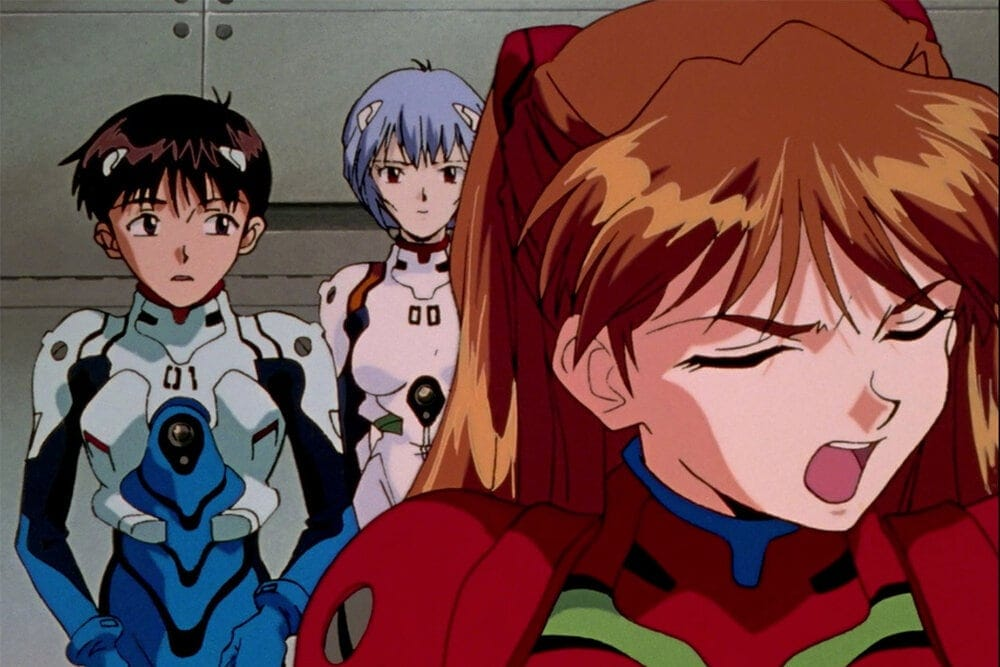

What Is The History Of Anime In Japan?
Where did anime begin? What Is The History Of Anime In Japan? And how did it evolve into the successful industry it is today? The story of animation in Japan is almost as dramatic and captivating as the anime themselves.
Even though I didn’t know it until several years later, my first foray into Japanese culture was watching cartoons on Saturday mornings. Entranced by the fantastic plot lines, giant eyes, and wonderful animation, I was watching anime without even knowing it.
Anime means “animation” in Japan, so in theory, could apply to any form of animation from around the world, but in modern times has come to refer to any and all Japanese animation. When most people think of anime they think of vibrant and beautifully drawn scenes, that are both dramatic and heartfelt, sometimes with just a hint of magic.
The history of anime in Japan can be traced back to the late 19th century. In fact, it was a French art movement called "Japonisme" that helped inspire Japanese artists and create some of the first examples of modern animation. However, it wasn't until World War II when Japan's government started promoting cartoons as a way to raise morale that the style really took off.

How Did Anime Start?
The first-ever Japanese animation in its most basic form is thought to have been created in 1906, but the legitimacy of this claim has been disputed by some. The short, animated film was called Katsudō Shashin depicts a young boy drawing the Japanese characters for Katsudō Shashin. It was made using fifty different frames, each of which was stenciled onto a strip of celluloid (a type of thermoplastic film). There have been several claims that other films entered Japan around this time too, but none have been able to be fully verified.
While there were several projects that made it to screen in Japan after 1906, including the French animated film Exploits de Feu Follet by Emile Cohl in 1912. It wasn’t until 1917 that the first commercial anime was officially produced and broadcasted in Japan (the one that most people agree to be the first, anyway). That anime was called Dekobō Shingachō: Meian no Shippai, but like most anime of the time the original copies did not stand the test of time - most of them were cut up and sold as individual frames or strips to collectors.
A Timeline Of Anime
1920s – 1950s
Japanese filmmakers began experimenting with popular animation techniques in the early 20th century, using methods that were already established in European countries and the United States, and by the 1930s animation as a legitimate form of entertainment was well established. Despite the hard work of many talented artists anime still struggled to compete against foreign productions, especially in terms of budget and resources. Anime was still mainly produced using a cheaper form of animation known as “cutout animation”, whereas more advanced (read: well-funded) studios were using “cel animation”, which is faster and more advanced.
A key contributor to the success of anime is resourcefulness - when talented people are forced to work with limited or outdated resources, creativity often ensues. So, while anime struggled to compete globally with larger animation studios, artists spent time trying to make limited animation a positive thing, which contributed to the unique style of storytelling that sets anime apart today. Long, slow-motion shots, or stills, that used more of the budget than other parts of the project became synonymous with Japanese cartoons, and can still be seen in many famous works today.
An injection of government funding in exchange for educational shorts and propaganda films helped push the limits of what had previously been possible in Japan, even if that injection did come with a certain level of censorship. Pioneering animators like Mitsuyo Seo (Sankichi no Kūchū Ryokō – 1931, Ari-chan – 1941) and Kenzō Masaoka (Masaoka is responsible for an impressive collection of films made between 1927 and 1950, and trained other influential animators too) made fantastic progress thanks to their dedication and the backing of the government.
During this time Disney was proving to be a strong force in the world of animation, and the release of the 1937 film Snow White and the Seven Dwarves is thought to have had a sincere and deep influence on many Japanese animators, which leads us into the next few decades.
1950s – 1980s
Following WW2 in 1948, the very first modern anime production company came to fruition – Toei. Founded by Kenzō Masaoka and Zenjirō Yamamoto, award-winning studio Toei is a behemoth in the anime industry. While there are many other fantastic studios that came into existence after it, Toei truly pushed animated shows to mainstream television in the 1960s, with heavy hitters like Gegege no Kitaro, Dragon Ball, Sailor Moon, Digimon, and One Piece (among many others). They even boast collaborations with some of the world’s most renowned anime artists, like the legendary Hayao Miyazaki, Yoichi Kotabe, and Yasuji Mori.
As the styles and techniques of anime progressed over the preceding decades, so did anime’s popularity, and the 1960s saw some of the first instances of Japanese animation being shown in other countries. Many of you reading this will have seen Astro Boy in one form or another, but what you might not know is that it was aired on NBC in 1963 after strong efforts by a man named Fred Ladd.
Unfortunately, this achievement was short-lived, as American audiences were not yet ready for anime in all its glory. The show received terrible ratings and did not complete its run on-air. This could be attributed to key differences between Japanese and western animation.

At the time, most cartoons in the west were of animals. Japanese cartoons however featured humans heavily, in crazy and often magical adventures. Research done at the time showed that western audiences felt uncomfortable seeing “human characters” in strange and unusual situations. Japanese animators were not fazed by this, partially due to the massive success of anime in Japan, and partially because they were eager to push the boundaries of storytelling in a way that made sense to them.
In the 1970s, television (both animated and live-action) grew in popularity in Japan in a major way, and many talented people working in the film industry migrated to TV, which hugely expanded the talent pool. Much like everywhere else in the world, the 70s became a time of experimentation of styles and content, and it’s around this time that many modern-day fixtures of anime movies and shows were born.
Some of the most popular anime genres, like mecha anime, were created during this time, and similar styles began popping up all over the world. The giant robot theme is still very common in anime, manga, and gaming in Japan. In fact, in many of Japan’s arcades, you can even play in a Gundam Pod as one of your favorite robots.
The 1980s were considered by many to be the golden age of anime, with many of the genre’s most beloved titles being made during the decade. Dragonball, Captain Tsubasa, Akira – just a few of the titles that are synonymous with the success of anime both in Japan and overseas. Not only were there some truly iconic releases, but 1985 saw the creation of one of the most iconic studios too – Studio Ghibli.
After the massive success of Nausicaa of the Valley in 1984, renowned director Hayao Miyazaki (who worked under the wing of Toei Studios) and long-time colleague Isao Takahata (Pom Poko, Heidi Girl Of The Alps, Grave of the Fireflies – just a few of the incredible titles he’s helmed through the years) began their very own studio, and went on to release two of the most successful anime movies to date – Laputa: Castle in the Sky, and Kiki’s Delivery Service – before the decade had even finished. The studio went on to release some of the most iconic projects of all time.
The birth of home video revolutionized film and television around the world, and Japan’s love of technology only served to fuel the growth of experimental anime. Creators worked on projects and manga adaptations that went straight to video, allowing them to be more experimental with storylines and animation methods. It also allowed for more and more people overseas to access anime – the process was still difficult, but it was more accessible than it had been previously.
Incredibly devoted clubs took to trading and importing any content they could get their hands on. Even developers of the new Laser Disk format saw these devoted otakus as a great opportunity to expand, and they set up their own major distributors in Japan and the United States.
1990s – modern day
Needless to say, the passion and dedication of Japanese animators meant that by the start of the 90s Japan had an extensive catalog of anime. Both anime movies and series had loyal, devoted fans, and were firm fixtures of Japanese culture. The late 80s had given birth to a whole new wave of people – otaku (literally translated geek or nerd) – people who were devoted to their interest. Anime was even created with otaku in mind, leading to the creation of even more specific anime genres. For example, the creation of Dragonball Z, which sparked the martial arts, the superhero genre, and went on to become one of the most popular anime worldwide.
There was also an increased interest in anime aimed entirely at adults (we’re not talking about X-rated anime, which is a sub-genre entirely on its own) – these films and series had high amounts of sexuality and violence, making them far too adult to be seen by children. Censorship boards in Japan began to clamp down on what could be shown and when on Japanese television.
Neon Genesis Evangelion, The Ghost in the Shell, Cowboy Bebop – not only did these projects have a limited (and late-night) run on TV in Japan, they caused quite a stir overseas too. The Ghost in the Shell was actually a huge inspiration for the creators of The Matrix film series, showing how much of an influence anime had on western media at the time.

A huge contributor to that reach was the fact that DVD technology had become commonplace at the start of the 2000s, making it much easier to get copies of popular anime with both subbed and dubbed versions on the same disc. And of course, the internet was starting to become a household commodity around this time too, meaning otaku all over the world could share in anime that would have taken them months to obtain previously.
Not only that, but people were able to discover titles that had perhaps been a little more niche or harder to discover if you lived anywhere outside Japan. This is not to undermine the level of success anime had already had up to this point in Japan and Asia, visibility in western markets isn’t the gauge by which we should determine whether something was successful or not. As you can see, anime was already a thrivin
But, in my humble opinion, these advancements are worth discussing, because they’re likely some of the catalysts that led to you reading this article at all. What was once seen as a “niche” interest for dorks and weirdos who frequented comic book shops, quickly became widely accepted as an impressive form of media.
And then you have my generation, who grew up watching shows like Pokémon, Dragonball Z, and Sailor Moon, and didn’t need any convincing that anime is amazing once we realized that’s what we’d grown up watching anyway. That, along with the fact that it’s awesome, is likely just one of the reasons films like Your Name have had such success overseas, and why providers like Netflix can’t create titles as fast as they’re being watched.
Not that they need to – Japan’s animation studios are as prolific as ever, with no signs of slowing down. Streaming services like Netflix have added popular series to meet growing demand, but services like Crunchyroll have been meeting those needs for over a decade. And so, the already popular movement of anime keeps on growing, with many new titles released every year. Even in the newest anime, though, you can see the hard work of animators from decades before.
Some of their styles and classic anime tropes can still be found throughout different genres, and some of their most prolific animators are still going strong (Miyazaki, Matsumoto, Minami, etc). Japan’s love of anime is as strong as ever, and my only hope is that the west realizes why that is, and brings more amazing titles to cinemas over here (I recently saw Weathering With You as a cinematic release in the U.K., and it was wonderful).
Manga's Influence On Anime
Manga has had an enormous effect on the success of anime, in part because while animators were perfecting their own styles, so too were manga artists, and they didn’t have the confines of technology to restrict them. Art has been a huge part of Japanese culture for centuries, and it’s said that manga originated from scrolls dating all the way back to the 12th century, perhaps even influencing Japan’s right-to-left style of reading.
Manga is unique in many ways, but one pretty important one is the fact that manga has been created for every genre and person you could imagine – men, women, boys, girls, magic, adventure, robots, martial arts, the most kawaii of characters you could think of, there’s no end to the number of tales being told by these talented storytellers. And they are nothing but dedicated, with some manga series having hundreds of volumes.
As you can see, there’s plenty of material to draw from, and that’s precisely what many intelligent animators did. So many of the most popular anime series started out as manga: Attack on Titan, One Piece, One Punch Man, even Astro Boy started out as manga!